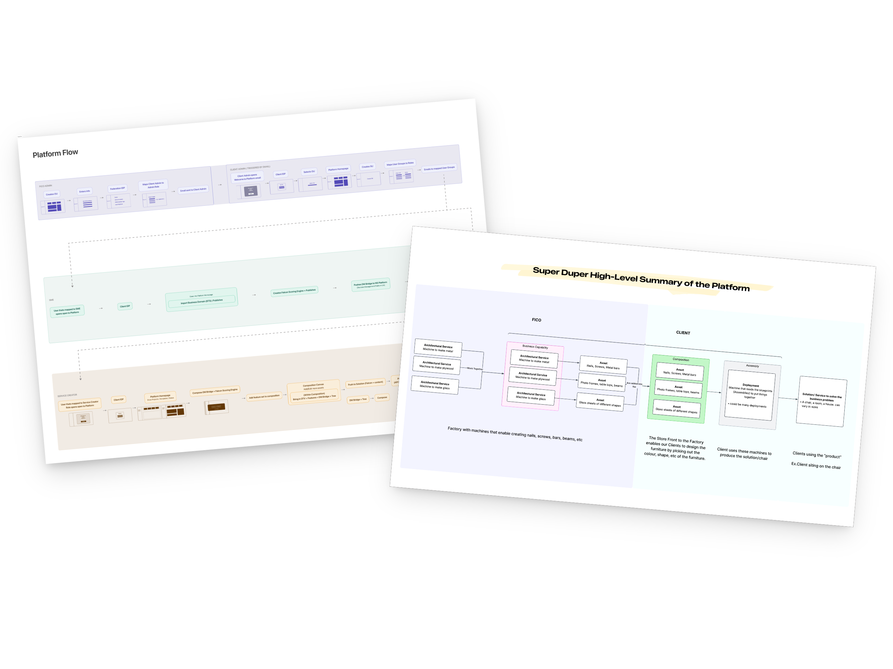
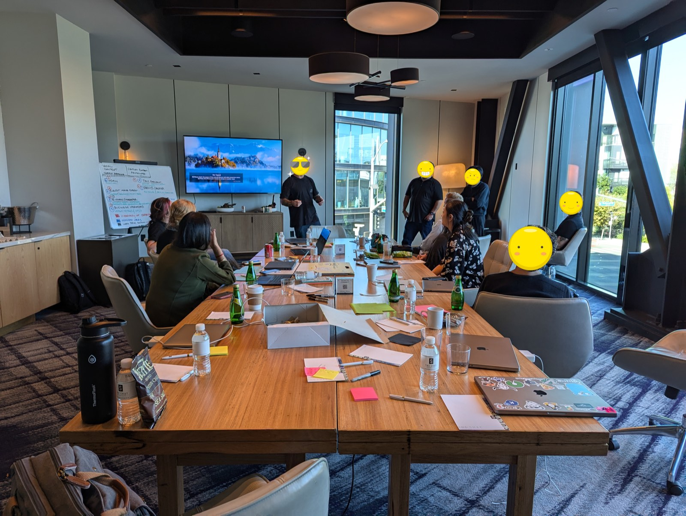
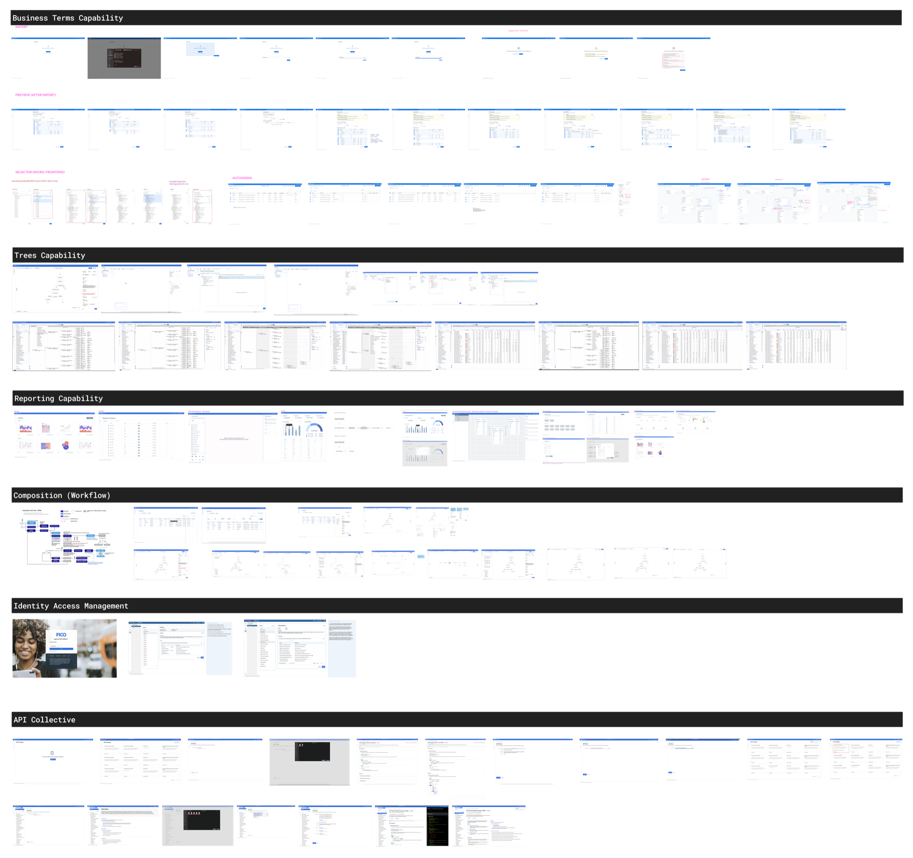
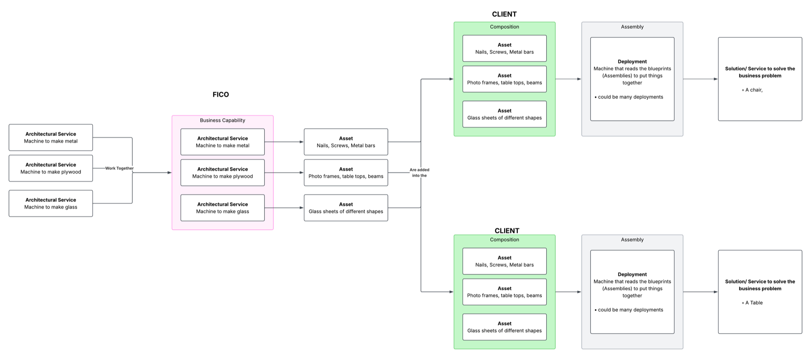
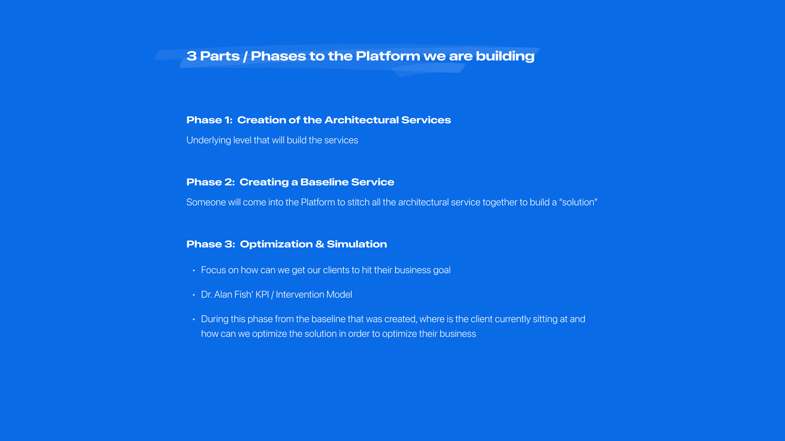
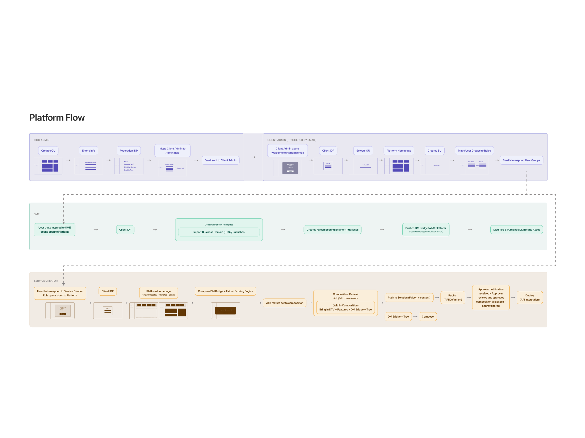

Designing the end-to-end blueprint and alignment strategy for the new FICO Platform
FICO was transforming from a legacy financial-data-analytics tool into a multi-sector B2B Platform Builder — but internal teams were still thinking in legacy silos, with no shared picture of how the new architecture actually fit together.
On my own initiative, I ran technical stakeholder research and designed the platform's first visual end-to-end blueprint and shared mental model.

Overview
Teams across the org were heads-down building individual capabilities, with no shared visual documentation of how the platform fit together. The architecture diagrams that existed were written for engineers — too technical for the product, design, and business stakeholders who also needed to reason about it.
"Does everyone actually understand how this entire platform ecosystem fits together?"
Teams were building in parallel isolation without a map. I saw the gap and took ownership of closing it: I conducted stakeholder research across the technical org and produced the platform's first visual end-to-end documentation.
My Contribution
I was the sole driver of this initiative: I defined the scope, interviewed the technical stakeholders, and executed both deliverables independently — balanced alongside my primary workload of scaling the Figma design system and leading design for Business Terms Capability.
Impact
Unified Reference Point
Consolidated scattered screens, decisions, and concepts from across the design team into one continuous, shared picture — for the first time, everyone could see the whole system in one place.
Simplified Onboarding
The House Analogy gave cross-functional teammates without deep technical backgrounds an intuitive mental model, and became a standing reference for onboarding new team members to the platform.
Strategic Alignment
The end-to-end blueprint let the team map user archetypes directly to screens and tasks, making it easy to spot system gaps, define MVP priorities, and scope future phases.
the backstory
Problem Statement
Teams had no shared blueprint to align around, which made agreeing on the platform's vision genuinely difficult.
Architecture documentation existed, but it was written in engineering terms that blocked non-technical stakeholders from engaging with it. Without a common reference, onboarding to the platform's strategy and structure was inconsistent across the org — every new teammate had to piece it together on their own.

Process

Reason for design: Rather than work from assumptions, I facilitated working sessions with the Front-End Architect and an Engineering Manager to get straight answers, in layman's terms, to the basic questions nobody had documented:
- What are we actually building — in plain language, not architecture jargon
- How do the capabilities relate to one another — and what does the platform feel like on day one versus six months in
I focused on absorbing the technical detail, asking clarifying questions, and mapping what I learned into accessible documentation. Outcome: the House Analogy concept came to life.

Reason for design: Nobody outside engineering could reason about dependencies and build sequence directly from the architecture terms. Everyone, technical or not, already understands that you can't put the roof on before the walls.
I reframed the platform as a house under construction — materials, framing, electrical, plumbing — and mapped each platform capability and team role onto a building phase and trade. This made dependencies, ownership, and sequencing tangible, and it became the team's standing reference for onboarding.


The final step mapped the complete Day 0 to Day 2 flow, aligning each user archetype directly to the tasks and screens they'd actually touch.
Impact & Validation
This end-to-end blueprint let the team map user archetypes to specific screens and tasks, making it easy to identify system gaps, define MVP priorities, and scope out future phases.
FICO World 2026 — Platform Preview
This concept was later previewed publicly at FICO World 2026 — a supplementary highlight, not a deliverable of this project, but real evidence the work reached beyond the team that commissioned it.